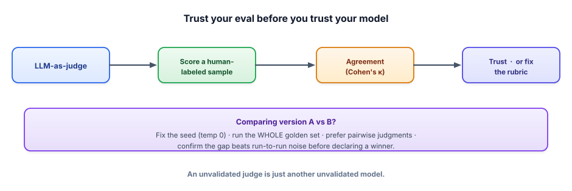

Advanced evals
An LLM judge is a model that grades other models' answers.
A judge can be wrong or biased too, so you test the judge before you trust it.
First compare its grades with human grades on 30 to 50 examples.
Then cancel its known habits, such as liking the first answer shown or the longer one.
Finally, only call a new version better when the gap is bigger than the noise.
An LLM judge is a new referee. Before you let them run the final, you watch them call 50 recorded plays and compare their calls with a panel of experienced referees. If they agree far more often than chance, you trust them; if they always favour the team on the left side of the screen, you swap the sides and see if the call changes.
| In the picture | In the real system |
|---|---|
| Watching the new referee call 50 recorded plays | Calibrating the judge against hand labels |
| Agreeing more often than chance | Cohen's kappa: agreement corrected for luck |
| Swapping the teams' sides of the screen | Position swapping: judge A-then-B and B-then-A |
| One lucky call in a close game | Noise: a small score change can be random, so test significance |
Where the picture breaks. A human referee can explain each call; an LLM judge's reasons can sound good and still be wrong, so you check agreement in numbers, not in explanations.
Going deeper
Track 6 made you measure. This lesson makes your measurements trustworthy — calibrating LLM judges, cancelling their biases, and using enough statistical care that “v2 is better” is a fact, not a hopeful glance at a number that ticked up.
Why your eval needs its own eval
An LLM-as-judge is itself a model, with all the unreliability that implies — so an unvalidated judge is just another unvalidated model, and trusting it blindly means you’re measuring your system with a ruler of unknown length. Worse, judges have systematic biases: they tend to favor the first answer shown (position bias), longer answers (verbosity bias), and outputs from models like themselves (self-preference). If you don’t account for these, you’ll confidently ship changes that the judge liked for the wrong reasons. Advanced evaluation is the discipline of making the measurement itself rigorous before you let it drive decisions.

1 · Calibrate the judge against humans
Before an LLM judge grades thousands of outputs, prove it agrees with people on a sample you label by hand. Take 30–50 examples, score them yourself (or with a teammate), have the judge score the same ones, and measure agreement — ideally Cohen’s κ (kappa), which corrects for agreement that would happen by chance. High agreement means you can trust the judge to scale your labels; low agreement means your rubric is ambiguous or the judge is biased, and you fix that before proceeding. This calibration step is what converts “the judge said 8/10” into a number you can stand behind.
2 · Cancel the biases you can predict
Two cheap techniques remove most judge bias. For comparisons, use position swapping: judge each pair twice, A-then-B and B-then-A, and average — if a model only wins in one order, that’s position bias, not quality. Prefer pairwise judgments (“which answer is better?”) over absolute scores, because relative judgments are more stable and consistent than a model’s shaky sense of “7 vs 8 out of 10.” And control for verbosity by telling the judge to ignore length and reward correctness, or by capping answer length in the comparison.
def which_is_better(question, answer_a, answer_b):
# Judge both orders to cancel position bias, then combine.
first = judge(question, answer_a, answer_b) # returns "A" or "B"
second = judge(question, answer_b, answer_a) # swapped order
if first == "A" and second == "B": # both agree A is better
return "A"
if first == "B" and second == "A": # both agree B is better
return "B"
return "tie" # disagreement = position bias, call it a tie3 · Respect the noise
LLM outputs vary run to run, so a small score difference can be pure randomness. Before declaring a winner, take three precautions. Reduce noise where you can: fix the seed and use temperature 0 for eval runs so results are reproducible, on models that still let you (local Ollama does, through its seed and temperature options). Hosted APIs are dropping this knob: Claude 4.7 and later accept only the default sampling, and Anthropic API version 2026-10-21 returns a 400 if you send temperature at all (migration guide). There you cut noise by running each case several times and averaging instead. Use enough examples: a 2-point move on 50 questions is one or two answers flipping — well within noise — whereas the same gap over 500 questions is far more credible. And quantify uncertainty: report a confidence interval or run a simple significance check, and only call a change a win when the gap clearly exceeds run-to-run variation. “The number went up” is the beginning of an investigation, not the end of one.
Assumptions: a 500-question RAG golden set, an LLM judge that labels each answer faithful or not, and 50 answers hand-labelled by two engineers.
- Agreement table on the 50. Both say faithful: 27. Human yes, judge no: 3. Human no, judge yes: 5. Both no: 15.
- Raw agreement. (27 + 15) / 50 = 0.84.
- Chance agreement. Humans say yes 30/50 = 0.60, the judge 32/50 = 0.64. p_e = 0.60 x 0.64 + 0.40 x 0.36 = 0.384 + 0.144 = 0.528.
- Cohen's kappa. (0.84 - 0.528) / (1 - 0.528) = 0.312 / 0.472 = 0.66. Usable, but look at the 5 cases where the judge passed answers humans failed: those are the dangerous ones for a faithfulness gate. Tighten the rubric ("any number not in the context is unsupported") and re-measure.
- Compare v1 and v2 on 500. Net score moved from 80.0% to 82.4%. But only the flipped questions carry signal: v2 fixed 31, broke 19. McNemar's test: (|31 - 19| - 1)2 / (31 + 19) = 121 / 50 = 2.42, below the 3.84 needed for p < 0.05. Not yet a proven win.
- RAG metrics follow the same rule. Faithfulness, answer relevance and context precision and recall in the Ragas style are all judge outputs (Es et al., arXiv 2309.15217), so each needs this calibration, and the judge model and prompt must stay fixed when you compare versions. Change the judge and you changed the ruler.
- An unvalidated judge is an unvalidated model — calibrate it against human labels (Cohen’s κ) before trusting it at scale.
- Judges have systematic biases (position, verbosity, self-preference); design around them.
- Swap positions and average, and prefer pairwise over absolute scores, to get stable comparisons.
- Respect run-to-run noise: fix the seed/temp 0 where the API allows it (else repeat runs), use enough examples, and check the gap beats variation before declaring a winner.
- Rigor in the measurement is what lets evals safely drive decisions.
A teammate says: “v2 of our prompt scored 82% vs v1’s 80% on our 50-question set — let’s ship v2.” Is that conclusion safe? What would you do before shipping?
▸ Show solution & reasoning
Is it safe? No — not yet. A 2-point difference on 50 questions is just one answer changing (1/50 = 2%). That’s easily within run-to-run noise, especially if the eval wasn’t run at temperature 0, and it could even be judge variance rather than a real quality change. Shipping on this is exactly the trap this lesson warns about.
What I’d do: (1) re-run both versions at temperature 0 with a fixed seed to remove sampling noise, ideally a few times to see the spread. (2) Expand the set — 50 is small; move toward a few hundred representative questions so a 2-point gap means something. (3) Use a pairwise judge with position-swapping (“is v2’s answer better than v1’s for this question?”) rather than comparing two absolute percentages. (4) Look at which questions changed — did v2 fix a real failure mode or just reshuffle? (5) Only call it a win if the gap clearly survives all of that. If it doesn’t, v1 and v2 are effectively tied and the decision should rest on other factors (cost, latency, simplicity).
Why this matters: teams that ship on noise spend their lives chasing phantom improvements and regressions. Insisting that a “win” beat the noise floor is what makes your eval a reliable decision-making instrument instead of a slot machine.
Your LLM judge tends to prefer whichever answer it sees first. What’s the most effective fix for fair A/B comparisons?
Comparing prompt A vs B, why fix the seed and run the whole golden set?
Your judge agrees with humans on 90% of items, but 90% of all answers are good. Why is 90% agreement not impressive here?
After switching the judge to a newer model, your RAG system's faithfulness score jumps from 0.78 to 0.86 with no change to the system. What is the right conclusion?
Here’s the strategic reason this track ends on evals rather than a flashier topic: in applied GenAI, the evaluation harness is often a more durable advantage than any prompt, model, or framework. Models change every few months and prompts are easily copied, but a rich, domain-specific golden set — built from your real users’ questions and your real production failures — encodes hard-won knowledge that competitors can’t clone. Teams that can reliably tell whether a change is better can adopt new models the day they launch, safely, while teams flying blind are stuck guessing. The eval is what lets you move fast without breaking things.
That turns into a flywheel. Every production failure becomes a new test case, so the system literally can’t regress the same way twice; the golden set grows richer with use; and evaluation graduates from a one-time check into eval-driven development — wired into CI so no prompt or model change ships without passing, exactly like unit tests guard normal software. The cost to watch is the judges themselves (running an LLM over a large set isn’t free), so you balance set size, judge model, and frequency — yet another measurable trade-off. Internalize this and you’ll be the engineer who makes a team’s AI trustworthy, which is precisely the person worth hiring.
That’s the whole journey — from “what is a token?” to calibrating an LLM judge. You can open the box, feed a model knowledge, let it act, make it trustworthy, fast, and cheap, prove it with built-and-measured projects, and present yourself for the role. The only thing left isn’t reading — it’s reps: build the capstones (Track 14), run your study plan (16.1), and start applying. You’re ready. Go build something real.
labs/06_evals.pyFree and offline once set up: Ollama with qwen2.5:7b, plus the packages in labs/README.md. From the course folder:
python labs/06_evals.pyWhat to look for: The position-bias test judges 5 answer pairs in both orders and counts how often the verdict depends on order; with n=5 the printed 95% interval covers most of 0-100%, so treat it as a demo, not your judge's bias rate. The regression gate lists cases where v2 lost something v1 had (one direction only); add the reverse loop to get both directions and run the McNemar arithmetic above. The judge faithfulness check covers 12 answers: hand-label them yourself and compute kappa before you trust it.
Small samples: these labs use 5 to 20 cases so they run in minutes on a laptop. Where they report a rate, they print n and a 95% Wilson interval. Read them as a demonstration of the mechanism, not as a measured rate for your system; for that you need hundreds of cases and several seeds.
▸ Recorded output (our run, 2026-11-03, qwen2.5:7b on a laptop GPU)
5) Judge position bias: same pair, swapped order
How long do card refunds take? order1 picked B, order2 picked B -> FLIPPED
Return window for electronics? order1 picked B, order2 picked A -> consistent
Express shipping price? order1 picked B, order2 picked A -> consistent
When is standard shipping free? order1 picked A, order2 picked B -> consistent
Duplicate charge reversal time? order1 picked A, order2 picked B -> consistent
consistent verdicts: 4/5 = 80% (95% CI 38%-96%) correct in both orders: 2/5 = 40% (95% CI 12%-77%)
n=5 pairs is a demo, not a measurement of this judge's bias: the intervals span most of 0-100%.
Look: with no reference passage in the judge prompt, the judge has to guess which number is right.
Always judge both orders and count a win only when both agree; give the judge the reference.
6) How wide is the error bar on 12 cases?
v1 accuracy 11/12 = 92% (95% CI 65%-99%) (Wilson interval)
At n=400 the same accuracy would be roughly +/- 2.7%
{"v1_correct": 0.917, "regressions": 12, "judge_consistent": 4}Your numbers will differ a little run to run. Full log: labs/outputs. Source: labs/06_evals.py.
Warm-up. On 100 items: both pass 70, human pass and judge fail 5, human fail and judge pass 10, both fail 15. Compute raw agreement and Cohen's kappa.
▸ Solution
Raw agreement = (70 + 15) / 100 = 0.85. Human pass rate = (70 + 5) / 100 = 0.75; judge pass rate = (70 + 10) / 100 = 0.80. Chance agreement = 0.75 x 0.80 + 0.25 x 0.20 = 0.60 + 0.05 = 0.65. Kappa = (0.85 - 0.65) / (1 - 0.65) = 0.20 / 0.35 = 0.57. Moderate. The 10 items the judge passed but humans failed are the risk; read them and fix the rubric.
Transfer. Prompt v2 beats v1 on a 300-question set: 74% vs 70%. Per question, v2 fixed 22 and broke 10. Is this a real improvement at the 5% level?
▸ Solution
Net gain = 22 - 10 = 12 questions = 4 points of 300. McNemar with continuity correction: (|22 - 10| - 1)^2 / (22 + 10) = 121 / 32 = 3.78. The 5% critical value for 1 degree of freedom is 3.84, so it is just short. Call it promising, not proven: add questions or repeat runs, and read the 10 regressions, since a fix that breaks a safety-critical case may not be worth 22 small wins.
Stretch. You run Ragas-style faithfulness, answer relevance, context precision and context recall in CI on every pull request. Design the safeguards so the numbers deserve trust.
▸ Solution
- Calibrate each judged metric. Hand-label 50-100 items per metric, compute kappa (or correlation for scores), and keep the labels as a regression test for the judge itself.
- Pin the ruler. Version the judge model, prompt and rubric. When any changes, re-score the baseline before comparing.
- Know what each metric cannot see. Faithfulness ignores whether the context was right; answer relevance (Ragas uses generated-question similarity) does not check factual accuracy; context recall needs reference answers; context precision rises if you return less. So pair them, and add answer correctness on a referenced subset.
- Quantify noise. Bootstrap confidence intervals or paired tests on the same questions; gate on "significantly worse", not "any drop".
- Avoid self-preference. Use a judge from a different model family from the generator where possible.
- Watch for gaming. Track abstention rate and answer length so a system cannot raise faithfulness by saying less.
Junior What is position bias in an LLM judge and how do you handle it?
▸ Model answer
Position bias is when a judge comparing two answers tends to prefer whichever it sees first (or second), regardless of quality. You handle it by judging each pair twice with the order swapped and only counting a win when both orders agree; disagreement becomes a tie. You can also measure it directly: the fraction of pairs whose verdict flips when swapped is the judge's position-bias rate, and it should be low before you trust the judge.
Mid How do you validate an LLM-as-judge for RAG faithfulness before using it?
▸ Model answer
I sample 50 to 100 real answers with their retrieved context and have two people label each claim or answer as supported or not, using the same rubric the judge gets. I check human-human agreement first, which is my ceiling. Then I run the judge and compute Cohen's kappa against the consensus, and I read the confusion matrix, because for a gate the key number is how often the judge passes answers humans failed. If kappa is weak I fix the rubric, add examples, or try a stronger judge, and re-measure. I keep the labelled set to re-check whenever the judge changes.
Senior A dashboard shows faithfulness 0.91 and answer relevancy 0.88 from Ragas, and leadership wants to ship. What might these numbers hide?
▸ Model answer
Several things. Both are reference-free, so neither says whether answers are correct: faithfulness only checks support by the retrieved context, which may be stale, and Ragas's answer relevancy scores how well questions generated from the answer match the user question, and its docs say it does not evaluate factual accuracy. Neither measures retrieval coverage; context recall needs references. A system that abstains or says little can score high faithfulness. Judges have position, verbosity and self-preference bias, so I need kappa against human labels and a judge from a different family from the generator. And I want confidence intervals, slices by query type, and a check that the golden set matches production traffic. Then decide.
- Zheng et al., Judging LLM-as-a-Judge with MT-Bench and Chatbot Arena (2023) - arXiv
- Es et al., Ragas: Automated Evaluation of Retrieval Augmented Generation (2023) - arXiv
- Answer Relevancy - Ragas documentation
- Saad-Falcon et al., ARES: An Automated Evaluation Framework for RAG Systems (2023) - arXiv
In one line: Before a judge grades your system, grade the judge.